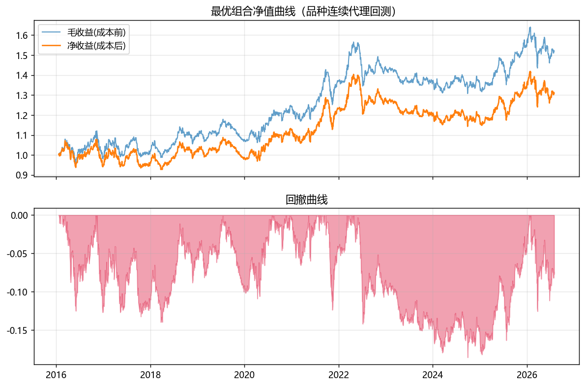
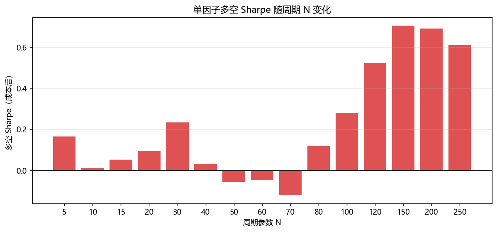

Quantitative research portfolio — commodity futures factor engineering and market state identification.
Factor specifications, benchmark mapping against classic alpha libraries, and a complete single-factor case study.
| Parameter N | IC | t-stat | Long-short annualised | Sharpe | Max drawdown | Turnover |
|---|---|---|---|---|---|---|
| N100 | +0.0087 | 1.68 | +2.3% | 0.28 | −28.2% | 1.5% |
| N150 | +0.0136 | 2.66 | +6.6% | 0.70 | −14.0% | 1.2% |
| N200 | +0.0144 | 2.75 | +6.3% | 0.69 | −13.9% | 1.0% |
| N250 | +0.0143 | 2.64 | +5.5% | 0.61 | −15.7% | 0.8% |
Net of transaction costs. Structure is monotonic: short horizons are neutral-to-weak-reversal, N≥100 turns significantly momentum. Cross-sectional IC is positive while time-series IC is negative — the factor carries relative strength across contracts, not absolute timing for a single contract.


Built as nowcast, not forecast: direction is largely unpredictable (signal half-life ≈ 12h), while volatility and regime are identifiable. Positioned for risk control and discipline rather than timing alpha.
signal = sign(R) × min(E/eff, 1): direction times trend-efficiency saturation, compressed into [−1, +1]. Hull MA smoothing.(win, eff) pairs; the five converge, and 60min serves as the primary signal.| Timeframe | win | eff |
|---|---|---|
| 15 min | 108 | 0.22 |
| 30 min | 54 | 0.31 |
| 60 min | 27 | 0.44 |
| 2 h | 21 | 0.46 |
| 4 h | 12 | 0.60 |
The demo page is self-contained (data and ECharts embedded, about 11 MB) and runs entirely in the browser.
Python (pandas, numpy, scipy, pyarrow) · factor engineering · cross-sectional backtesting (IC, quantile groups, long-short, cost sensitivity, train/val/test split) · MAD robust standardisation · HMM and probabilistic state modelling · ECharts interactive visualisation